Climate change is quite possibly the most pressing challenge facing humanity in the modern era. It’s an issue driven
largely by the rapid increase in atmospheric CO2 concentrations driven by anthropogenic sources, such as the burning
of fossil fuels and deforestation. While significant attention has been paid to the more obvious and dramatic effects,
like global warming and extreme weather events, a quieter but equally serious impact of rising CO2 levels is the
increase in ocean acidification. Ocean acidification results from atmospheric CO2 by ocean water, where it is
converted to carbonic acid, resulting in a net decrease in seawater pH.
Ocean acidification can have significant impact on aquatic ecosystems, especially those with organisms that utilize
calcium carbonate to form essential structures (such as corals and shellfish). As pH level decrease, these organisms
face significant challenges in growing or maintaining these structures, which impacts their ability to survive and
reproduce. Given the crucial role many of these species play in their ecosystems (especially keystone species such as
coral), the impacts on other species can be significant. Understanding how CO2 levels correlate with changes in oceanic
pH is therefore important to predicting and mitigating these broader ecological impacts, as well as the potential
impacts to humans that rely on these ecosystems for food and commerce.
How closely do atmospheric CO2 concentrations correlate with changes in average ocean surface pH over time?
How does ocean acidification correlate with declines in specific marine species populations?
What impact does ocean acidification have on global fishery populations?
Are there other features in the data which may be predictive of future acidification?
Is there a measurable lag between increases in atmospheric CO2 and corresponding changes in ocean pH?
Is there a link between rising atmospheric CO2 levels and coral reef degradation in the Caribbean?
How do temperature, salinity, and CO2 uptake interact to influence acidification?
Are acidification trends more severe near coastal urban centers or areas with high tourism?
How have natural carbon sinks in the Caribbean responded to changes in ocean acidity?
Do hurricanes and extreme weather events play a role in short-term shift in ocean acidity?
Conclusions
This section summarizes key findings, insights, and recommendations based on model results.
Data Preparation & EDA
Details on data cleaning, feature engineering, and exploratory data analysis (EDA).
The following data on global average suface level atmospheric CO2 concentrations were obtained via API. The specific
API was obtained from PhilippSchmitt's ppm GitHub repository, found at
philippschmitt/ppm; specifically,
the data obtained were the globally averaged marine surface monthly trend data, which was drawn from the
NOAA Trends in Atmospheric Carbon Dioxide.
Raw vs Parsed CO₂ Data
Raw JSON Data (First 5 Entries)
Loading...
Cleaned CSV Data (First 5 Rows)
Date
Year
Month
CO₂ (ppm)
In addition to this data, which is intended primarily to be used to compare local conditions to global averages,
a more comprehensive, localized dataset pertaining to multiple measures of oceanic chemistry in the vicinity of
the Sargasso Sea from October 1988 through December 2024, known as the
Bermuda Atlantic Time-series Study (BATS) was obtained. An image of the head of the obtained csv is shown
below.
Preview: BATS Dataset (First 10 Rows)
time
depth
Temperature
Salinity
Oxygen_1
CO2
Alkalinity
NO3_plus_NO2
NO2
PO4
Silicate
POC
PON
TOC
TN
Bact_Enum
POP
TDP
SRP
Bio_Si
Litho_Si
Prochlorococcus
Synechococcus
Picoeukaryotes
Nanoeukaryotes
yyyymmdd
time_unitless
decimal_year
UTC
m
degrees Celsius ( \u00b0C)
dimensionless
micromoles per kilogram (umol/kg)
micromoles per kilogram (umol/kg)
microequivalents
micromoles per kilogram (umol/kg)
micromoles per kilogram (umol/kg)
micromoles per kilogram (umol/kg)
micromoles per kilogram (umol/kg)
micrograms per kilogram (ug/kg)
micrograms per kilogram (ug/kg)
micromoles per kilogram (umol/kg)
micromoles per kilogram (umol/kg)
cells times 10^8 per kilogram
micromoles per kilogram (umol/kg)
nanomoles per kilogram (nmol/kg)
nanomoles per kilogram (nmol/kg)
micromoles per kilogram (umol/kg)
micromoles per kilogram (umol/kg)
cells per milliliter (cells/mL)
cells per milliliter (cells/mL)
cells per milliliter (cells/mL)
cells per milliliter (cells/mL)
unitless
unitless
unitless
1988-10-20T22:30:00Z
2000.5
3.817
34.993
255.5
NaN
NaN
NaN
NaN
NaN
NaN
NaN
NaN
NaN
NaN
NaN
NaN
NaN
NaN
NaN
NaN
NaN
NaN
NaN
NaN
19881020
2230
1988.8031
1988-10-20T22:30:00Z
2200.3
3.577
34.982
256.8
NaN
NaN
NaN
NaN
NaN
NaN
NaN
NaN
NaN
NaN
NaN
NaN
NaN
NaN
NaN
NaN
NaN
NaN
NaN
NaN
19881020
2230
1988.8031
1988-10-20T22:30:00Z
2398.9
3.317
NaN
NaN
NaN
NaN
NaN
NaN
NaN
NaN
NaN
NaN
NaN
NaN
NaN
NaN
NaN
NaN
NaN
NaN
NaN
NaN
NaN
NaN
19881020
2230
1988.8031
1988-10-20T22:30:00Z
2600.0
3.127
34.957
259.4
NaN
NaN
NaN
NaN
NaN
NaN
NaN
NaN
NaN
NaN
NaN
NaN
NaN
NaN
NaN
NaN
NaN
NaN
NaN
NaN
19881020
2230
1988.8031
1988-10-20T22:30:00Z
2801.7
2.927
34.944
261.0
NaN
NaN
NaN
NaN
NaN
NaN
NaN
NaN
NaN
NaN
NaN
NaN
NaN
NaN
NaN
NaN
NaN
NaN
NaN
NaN
19881020
2230
1988.8031
1988-10-20T22:30:00Z
3000.9
2.737
34.943
263.2
NaN
NaN
NaN
NaN
NaN
NaN
NaN
NaN
NaN
NaN
NaN
NaN
NaN
NaN
NaN
NaN
NaN
NaN
NaN
NaN
19881020
2230
1988.8031
1988-10-20T22:30:00Z
3200.6
2.557
34.927
263.2
NaN
NaN
NaN
NaN
NaN
NaN
NaN
NaN
NaN
NaN
NaN
NaN
NaN
NaN
NaN
NaN
NaN
NaN
NaN
NaN
19881020
2230
1988.8031
1988-10-20T22:30:00Z
3400.3
2.407
NaN
NaN
NaN
NaN
NaN
NaN
NaN
NaN
NaN
NaN
NaN
NaN
NaN
NaN
NaN
NaN
NaN
NaN
NaN
NaN
NaN
NaN
19881020
2230
1988.8031
1988-10-20T22:30:00Z
3600.4
2.327
34.917
262.3
NaN
NaN
NaN
NaN
NaN
NaN
NaN
NaN
NaN
NaN
NaN
NaN
NaN
NaN
NaN
NaN
NaN
NaN
NaN
NaN
19881020
2230
1988.8031
This table shows the first 10 rows of the BATS dataset. Columns include measurements like CO₂, alkalinity,
depth, salinity, and more.
Exploratory Chart: Number of measurements of CO2 and Alkalinity Distributed by Year
This chart was generated as part of the exploratory data analysis. It shows the temporal distribution
of available measurements for key chemical indicators in the BATS dataset.
Conversion to Monthly Averages
Given the large number of missing values in the two most important features, coupled with monthly averaged nature of the
other data collected, a new dataframe containing monthly averages of each feature was constructed. Below is a chart
showing the temporal distribution of CO2 and alkalinity in monthly average form; this was done to determine what form
of imputation for missing values should be used.
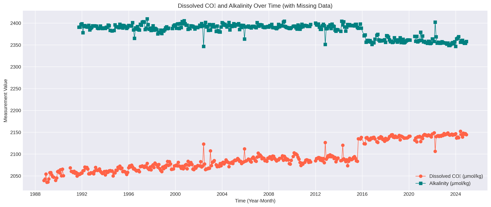
On the basis of these result, data from before 1992 was removed then missing values were imputed with the forward fill
and backward fill methods to preserve local temporal trends in the data. The head of the resulting dataframe follows:
year_month
depth
Temperature
Salinity
Oxygen_1
CO2
Alkalinity
NO3_plus_NO2
NO2
PO4
Silicate
POC
PON
TOC
Bact_Enum
year
1992-01-01
690.000000
15.565125
35.958723
225.854167
2056.258333
2398.263636
8.589375
0.083750
0.563542
8.352292
16.452188
3.523438
54.4
3.410000
1992.0
1992-02-01
585.584146
15.657915
35.998205
228.434091
2061.666667
2377.966667
8.487778
0.097381
0.556222
8.052222
13.292000
3.275000
54.4
3.951724
1992.0
1992-03-01
683.216667
15.043264
35.967208
227.029167
2062.550000
2392.100000
8.546596
0.036190
0.585745
8.768750
14.677188
3.524062
54.4
4.044444
1992.0
1992-04-01
606.393976
15.876349
36.027600
227.782222
2070.208333
2394.225000
8.256889
0.044889
0.525814
7.562000
19.444333
4.285667
54.4
4.230000
1992.0
1992-05-01
681.927778
15.662847
36.023271
228.402083
2068.016667
2392.408333
8.326667
0.008958
0.575000
7.776458
19.150000
4.015000
54.4
4.441667
1992.0
1992-06-01
971.204167
13.186854
35.741059
227.688889
2069.466667
2391.000000
11.508000
0.019118
0.709677
7.213929
12.056500
2.240000
54.4
3.244444
1992.0
1992-07-01
968.806250
13.625687
35.634529
225.768571
2065.575000
2390.933333
11.952286
0.004000
0.789429
11.609429
12.844444
1.947222
54.4
3.217647
1992.0
1992-08-01
970.193750
14.870896
35.767086
222.630556
2054.666667
2394.836364
10.657576
0.001515
0.732187
11.430000
13.788421
2.272105
54.4
3.223529
1992.0
1992-09-01
972.739583
14.337729
35.706400
222.211429
2054.736364
2384.363636
10.204375
0.019167
0.709032
10.507941
14.815500
2.818500
54.4
3.777778
1992.0
1992-10-01
959.831250
14.187833
35.672306
219.922222
2057.108333
2387.763636
11.187188
0.006500
0.723125
11.442778
10.491500
2.203000
54.4
2.582353
1992.0
Using the aggregated and cleaned data, the following EDA visualizations were constructed to explore potential
relationships within features.
Exploratory Chart: Feature Pairplot
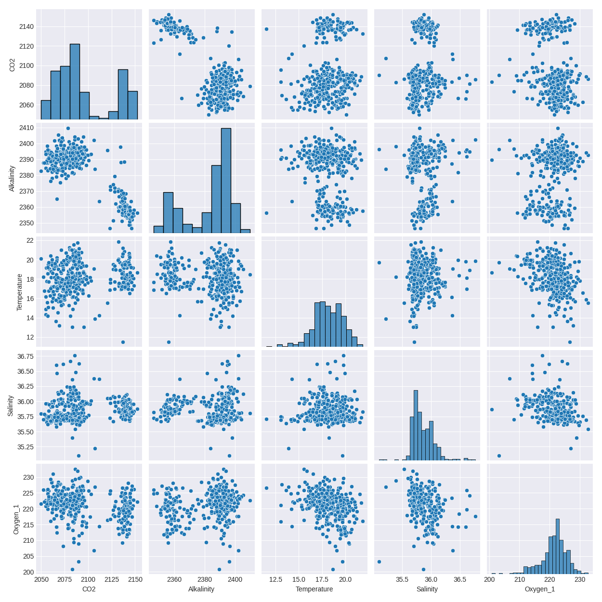
This chart is an aggregated pairplot of all the features within the dataset. This can be useful to show any
possible one-to-one relationships between the features; this can be useful in helping to decide if some cluster
analysis could potentially link two or more variables.
Exploratory Chart: Correlation heatmap
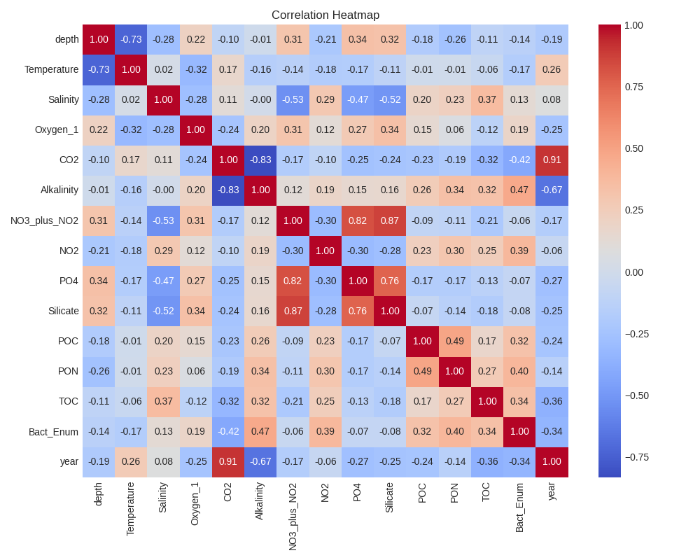
This chart is a correlation heatmap. Similar to the feature pairplot, this explores the pairwise linear correlation
between features. This can indicate the strength of linear relationships between variables, which can be used as a
useful starting point during regression analysis.
Exploratory Chart: Annual Boxplots of CO2 Distributions
This chart shows the annual distribution of CO2 concentration over the course of the total time frame the data
covers. This can help to illustrate underlying trends in the variance of the feature over time, which isn't visible
simply by looking at the raw monthly average values.
Clustering
Overview
Clustering, generally, is a family of unsupervised learning algorithms which seek to uncover underlying
patterns within a dataset by partitioning it into sections or "clusters". Traditional methodologies, such as
K-Means clustering, start by choosing a random (or semi-random) set of points to act as initial centroids
within the data. The Euclidean distance of each point from each centroid is then calculated, and each point is
then assigned to the cluster belonging to the centroid it is closest too. The centroid locations are then
recalculated and placed at the mean of their respective clusters, and the process is iterated again until
no points are reclassified. A notable weakness of this method is that the number of clusters "k" is fixed at
the beginning, and may not be optimal; hyperparameter tuning to find the best value for k is a critical
component of K-Means clustering.
A more advanced form of clustering, Heirarchical Clustering, avoids the need to select an initial value for
k. Instead, two versions, called Agglomerative and Divisive Clustering (also called "bottom-up" and "top-down",
respectively) dynamically form clusters, either by starting with each point as a single cluster and adhering
closest clusters together, or by starting with a single cluster and separating it into succesively smaller
clusters. An adavantage of these methods is that the dendrogram produced by the process allows for relatively easy
determination of how and were to determine what the value of k should be.
Regardless of which specific clustering algorithm is being used, several techniques are involved in the
hyperparameter tuning to find an optimal value for k. The simplest and easiest to understand is the generation of an
"elbow graph"; a sequence of values for k are used for clustering, and then an "inertia score" (which is a measure
of compactness as given by Within Cluster Sum of Squares or WCSS) is calculated for each and plotted against the
value of k. On the resulting graph an "elbow point" is identified if possible (this is a point where the reduction
in the inertia score by adding 1 to k begins to level out). A more robust method for determining the appropriate
value for k is the use of a Silhouetter Score. This score attempts to assign a value to how well assigned points are
within clusters, and tends to be sensitive to diffusely clustered data or overlapping clusters. In general, while
the elbow method can provide a decent initial starting point, the Silhouetter score tends to be a better metric for
determining an appropriate value for k.
Below are images showing and elbow graph and a sillhouette score map.
This chart shows the inertia scores for various values of k during K-Means clustering. This kind of graph would
be used when utilizing the elbow method to determine a good value for k; in this case, the elbow method would
suggest that k=3 would be best.
This chart shows the silhouette scores for various values of k during K-Means clustering. This kind of graph would
be used as a more robust alternative to the elbow method. In this case, the silhouette score is maximized at k=2,
indicating 2 clusters is probably best for this data.
Data Prep
One of the advantages of clustering is that the only requirements of the data used is that it be numeric and
unlabelled. In general it is preferable to also scale all features, as data at wildly different scales can have
inappropriately disparate impacts on the outcomes of clustering. Below are the heads of the data being used for clustering,
both the raw data and the cleaned and scaled data. Note that the rows containing NaNs were removed and the year_month column
was deleted.
year_month
depth
Temperature
Salinity
Oxygen_1
CO2
Alkalinity
NO3_plus_NO2
NO2
PO4
Silicate
POC
PON
TOC
Bact_Enum
year
CO2_rolling
Alkalinity_rolling
1992-01-01
690.000000
15.565125
35.958723
225.854167
2056.258333
2398.263636
8.589375
0.083750
0.563542
8.352292
16.452188
3.523438
54.4
3.410000
1992
NaN
NaN
1992-02-01
585.584146
15.657915
35.998205
228.434091
2061.666667
2377.966667
8.487778
0.097381
0.556222
8.052222
13.292000
3.275000
54.4
3.951724
1992
NaN
NaN
1992-03-01
683.216667
15.043264
35.967208
227.029167
2062.550000
2392.100000
8.546596
0.036190
0.585745
8.768750
14.677188
3.524062
54.4
4.044444
1992
NaN
NaN
1992-04-01
606.393976
15.876349
36.027600
227.782222
2070.208333
2394.225000
8.256889
0.044889
0.525814
7.562000
19.444333
4.285667
54.4
4.230000
1992
NaN
NaN
1992-05-01
681.927778
15.662847
36.023271
228.402083
2068.016667
2392.408333
8.326667
0.008958
0.575000
7.776458
19.150000
4.015000
54.4
4.441667
1992
NaN
NaN
Head of the dataframe containing the monthly averages of the accumulated data, before scaling and cleaning.
depth
Temperature
Salinity
Oxygen_1
CO2
Alkalinity
NO3_plus_NO2
NO2
PO4
Silicate
POC
PON
TOC
Bact_Enum
year
CO2_rolling
Alkalinity_rolling
2.363954
-2.062336
-0.648830
0.402820
-1.301238
0.705674
0.976389
-0.727995
0.950600
0.734709
-0.954000
-1.083280
0.890476
-0.340071
-1.739978
-1.179202
0.542878
1.015218
-1.358476
0.536558
-0.088737
-1.388716
0.667951
0.046280
-0.670858
0.000849
-0.144558
-0.927366
-0.634428
0.890476
0.223341
-1.632438
-1.183432
0.511969
-0.186372
-0.703887
0.480712
0.401614
-1.174849
0.707129
-0.384135
0.246053
-0.121481
-0.193684
-0.166833
0.608294
0.890476
1.420186
-1.632438
-1.185090
0.607047
-0.424154
-0.722420
0.689651
0.725123
-0.891539
0.677781
-0.342873
0.508642
-0.368542
-0.549187
0.331888
0.830068
0.890476
1.014146
-1.632438
-1.164693
0.614202
-0.082047
-0.630284
0.788108
0.805409
-1.082259
0.652544
-0.582655
-0.201745
-0.298202
-0.152928
-0.056572
0.339052
0.890476
2.143866
-1.632438
-1.183643
0.606168
Table containing the scaled and cleaned data used for clustering.
Both K-Means and Heirarchical clustering yielded very similar results; while the inertia score elbow graph for
K-Means indicated that k=3 would be optimal, the silhouette score indicated k=2 would be preferable for both K-Means
and Heirarchical clustering (see above for elbow and silhouette graphs of K-Means).
This chart shows the silhouette scores for various values of k during heirarchical clustering. This kind of graph
would be used as a more robust alternative to the elbow method. In this case, the silhouette score is maximized
at k=2, indicating 2 clusters is probably best for this data.
To illustrate the differences observed in the data when using k=2 vs k=3, a scatter plot of PC1 vs PC2 was generated
with points colored according to their inclusion in a cluster. The graph, show below, fairly dramatically illustrates
why 2 clusters makes more sense for the dataset.
This graph, which plots the data according to the first and second pricipal components generated with PCA and
coloring the data according to cluster inclusion, clearly demonstrates why k=2 should be preferred over k=3.
It's interesting to note that one cluster is significantly larger than the other when examining the dendrogram
generated during heirarchical clustering (see below).
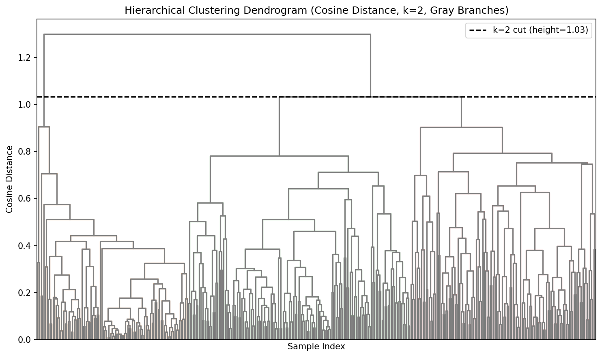
This dendrogram, generated during the process of hierarchical clustering, clearly shows that for k=2 one cluster
is significantly larger than the other.
Curious to determine what kind of underlying pattern might result in this stark clustering, several data
visualizations were generated to see if something could be discovered; given that the data was generated over a long
period of time, one of these which colored data points according to the year they were generated was created, shown
below:
This plot shows the two distinct clusters discovered with cluster analysis colored according to year.
Interestingly, it seems that all data points generated BEFORE a certain point belong in one cluster, and all data
points generate AFTER that point belong in the other. This would seem to indicate some kind of threshold event
occured in 2016 which cleanly divides the data into two subsets. What that event may have been remains unclear.
Principal Component Analysis (PCA)
Overview
Principal Component Analysis (usually abbreviated to PCA) is a technique for transforming datasets that allows for
reducing the dimensionality of the data with minimal loss of information. The central concept revolves around the use
of eigenvalues and eigenvectors; at their core, an eigenvector is a vector which, when multiplied by the matrix from
which is is derived, acts like a scalar multiplier (specifically, the scalar eigenvalue associated with the
eigenvector). What this means is that a given matrix can be rotated into an eigenspace in which each axis of the space
is represented by one of its eigenvectors, and each point in the original matrix becomes a linear combination of the
eigenvectors. This is useful in the context of dimensionality reduction because rotating the data into this eigenspace
and ordering the eigenvectors (now referred to as "Principal Components") according to the magnitude of their
corresponding eigenvales (which tell us the relative amount of variation within the data each PC is responsible for),
we can determine what number of PCs we need to account for the majority of the variation within our data; by
truncating our data after a sufficient number of PCs have been selected, we can significantly reduce the
dimensionality of our dataset while retaining the majority of the information contained within it.
But why is dimensionality reduction even desirable? In the modern world of big data, enormous datasets
comprising thousands or even millions of features exist. The computational power required to operate on these raw
datasets is staggering, and the time constraints associated with such operations frequently exorbitant. Reducing the
dimensionality of these datasets through PCA allows us to preserve the majority of the information contained in the
data, while reducing the computational load of working with the data. Additionally, high-dimensional data can be
difficult to work with in terms of analysis and visualization; while most people are able to visualize and understand
2-Dimensional data, and many can even extend to 3- or 4-Dimensional data, it becomes difficult to impossible to
effectively visualize and understand data of higher dimensions. PCA can allow us to create simpler, lower dimension
visualizations in ways that can aid comprehension at every step of the data science pipeline, even beginning with EDA.
Data Prep
PCA requires data be numeric, given that it is a mathematical transformation that rotates the data within an
n-dimensional vector space. The majority of my data was already in either float or integer form; the only feature not
already in this form was the date-time column. This was simplified to a simple integer year column for the purposes
of PCA. Addtionally, data of significantly different scales is not well-suited to PCA, with larger scaled features
tending to have outsized impacts on the outcomes of PCA. To this end, data needs to be scaled in such a way that
preserves the spread of the data while standardizing the scale. Several algorithms for this exist, but in this instance
the StandardScalar method from the sklearn library was used. This method is the same as that used in the clustering
segement of this project; to avoid duplication of information, the head of the scaled data table can be found on
the clustering tab.
Under ideal circumstances, PCA allows for the easy selection of a level of truncation, i.e. how many PCs to select
which retian the majority of the information (in the form of variance) contained within the data. In such circumstances,
the standard practice is to plot the relative or cumalitive variance against the number or principal components and
look for a clear elbow. Such plots often look like this:
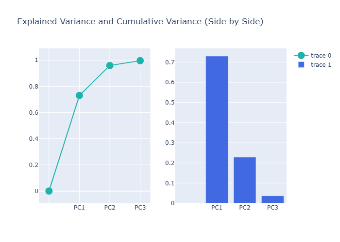
This plot shows two example versions of scree plots with clear elbows denoting good truncation points. Courtesy
of lecture code from Dr. Osita Onyejekwe.
Unfortunately for me, my dataset does not lend itself easily to such truncation methods. As you can see from the plot
below, the variation in my data doesn't cleanly organize itself into a relatively small number of principal components;
instead, the variance accounted for by each PC smoothly increases without truly plateauing. Approximately 80% of the
variance is contained within the first six principal components, but to reach a threshold of 95% of variance I would need
to retain 10 of the 16 total PCs. The first two PCs account for nearly 60% of the variance in the data, which is sufficient
for the puposes of data visualization and exploration, but cannot be relied on for rigorous analysis or modeling. Given
the decrease in ease of interpretation of the relationship between model inputs and outputs when PCA is used for feature
reduction, it may be prudent to avoid using transformed data for further analysis of this dataset.
This plot shows both the individual variances explained by PCs, as well as the cumulative variance explained..
Given the primary initial motivation of this project relates primarily to the relationship between dissolved CO2 and
ocean acidification, several scatterplots of PC1 vs PC2 were generated with data points colored according to original values
of one feature or another, including dissolved CO2 and Alkalinity.
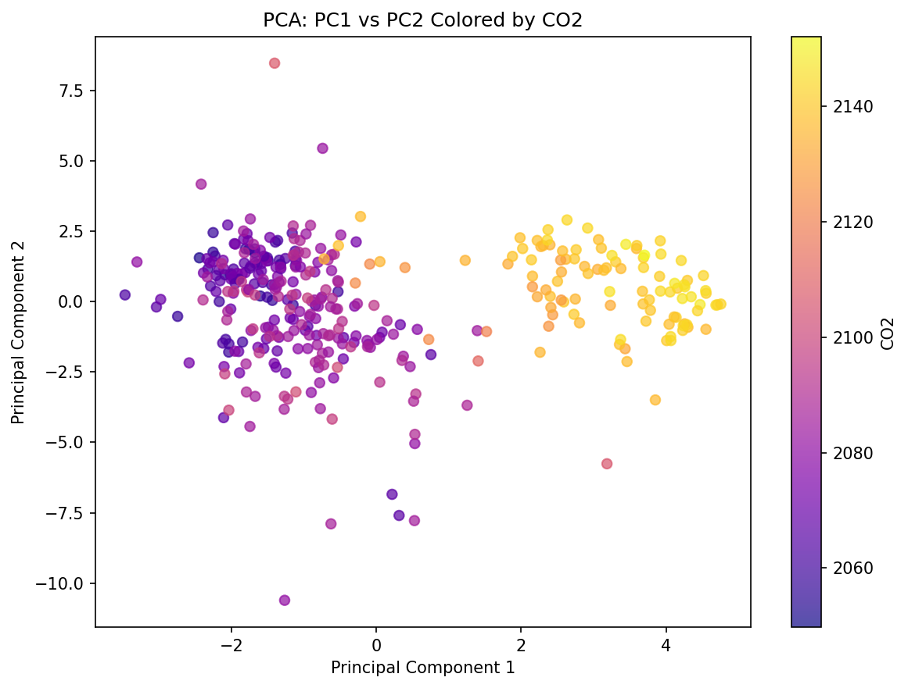
This plot shows the scatterplot of PC1 vs PC2 with data points colored accoring to their original values of dissolved
CO2.
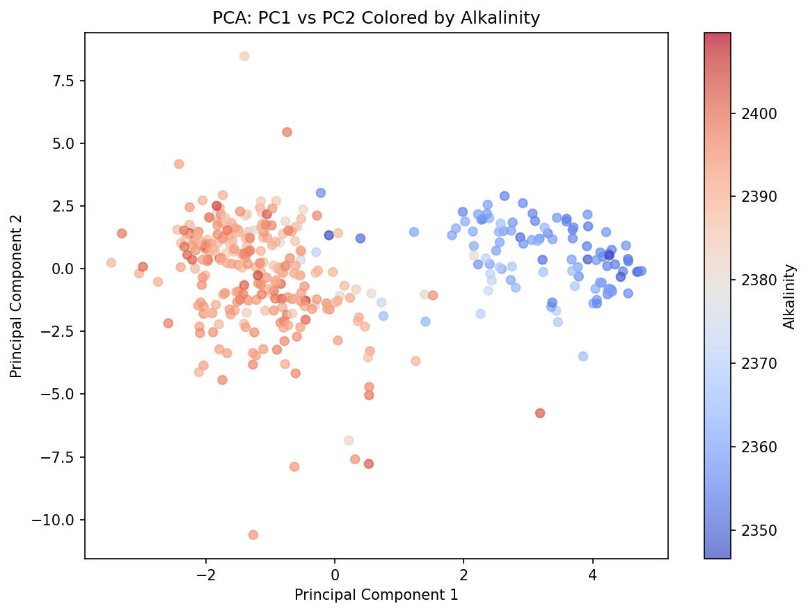
This plot shows the scatterplot of PC1 vs PC2 with data points colored accoring to their original values of alkalinity.
It's interesting to note that the pattern observed regarding the clustering of data points by time is also present
and recapitulated when comparing dissolved CO2 and alkalinity. While the total explained variance contained in PC1 and PC2
together isn't sufficient for robust data analysis, it does serve well for the purposes of crude exploration of the data,
and provides further evidence for some kind of threshold event partitioning the data into two distinct clusters. Further
analysis and research will hopefully uncover what this event may have been.
Naive Bayes
Overview
Naïve Bayes is a supervised learning algorithm which utilizes Baye’s Theorem from probability theory in order to classify data on the basis of calculated prior probabilities. It is used to predict a categorical
variable on the basis of one or more predictors; these predictors can be categorical or numerical, depending on the variant of the algorithm you are using. The most commonly encountered variants of the algorithm
are the Multinomial Naïve Bayes and the Gaussian Naïve Bayes. Multinomial NB uses categorical data and calculates prior probabilities on discrete counts from each predictor; Gaussian NB accepts continuous features,
under the assumption that they are approximately normally distributed.
In addition to the two primary NB variants, a lesser-used version exists called Bernoulli Naïve Bayes. As the name suggests, Bernoulli NB uses only binary features (such as the presence or absence of a word,
rather than a count of how many times the word appears, when building a spam filter). While the Bernoulli NB has useful applications, given the shape of my data I ended up using the Gaussian NB variant.
Data Prep
Given that my primary interest in this data set deals with the relationship between rising CO2 levels and ocean acidification, it seemed natural to choose “Alkalinity” as my target variable. Unfortunately, all of
my features are numeric, so the first step in my data cleaning process required that I create categorical labels from this variable. To that end, I created a histogram of the column to determine if there were any
naturally occurring categories within the data, and found that the variable was naturally bimodal. On this basis, I split the variable into two categories, “Low Alkalinity” and “High Alkalinity”, and used this
constructed categorical variable as the target for my Gaussian Naïve Bayes algorithm. I used a stratified split to build my 80/20 training/testing split. I chose stratification because the target variable was not
even in it’s split between categories; thus the relative proportion of the categories was preserved in both the training and testing sets. The training and testing sets must be disjoint in order to ensure that,
when testing the accuracy of the predictions generated by the algorithm we are not testing it on data on which it was trained; this helps us avoid the problems associated with overfitting, though some danger of
that still exists since the training and testing sets, though disjoint, were originally from the same source.
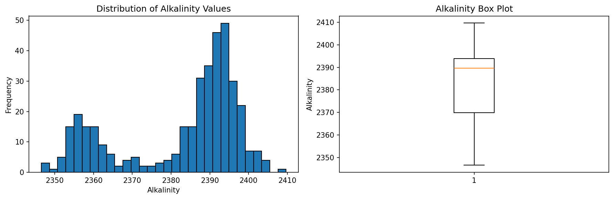
This histogram illustrates the bimodal nature of the Alkalinity feature; this was the basis for splitting it into two categories.
This table shows the head of the dataset, including the Alkalinity column reconfigured to categorical "High" and "Low".
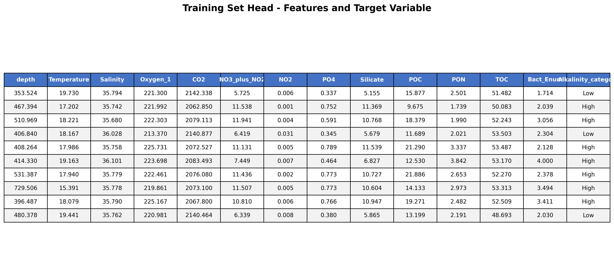
This table shows the head of the training dataset.
Overall, Naïve Bayes performed EXTREMELY well with my dataset. The overall accuracy of the algorithm over the testing set was 97.37%, with only two misclassifications, one each false positive and false negative;
the testing set itself contained a total of 76 observations. The F1 score was also .97. As such, this model seems very capable of accurately predicting oceanic conditions which will indicate either low or high
alkalinity. Out of curiosity, I also conducted a feature importance analysis to determine the relative contributions of the features to the model. Unlike decision trees, Naïve Bayes does not have built-in methods
for gauging feature importance, so I utilized two related measures: Class Mean Differences, and log Probability Variance. Both methods produced similar results, though log probability variance was more stark; CO2
concentration was far and away the strongest predictor of alkalinity class, with depth a distance second.
This is the confusion matrix for my Naive Bayes classifier.
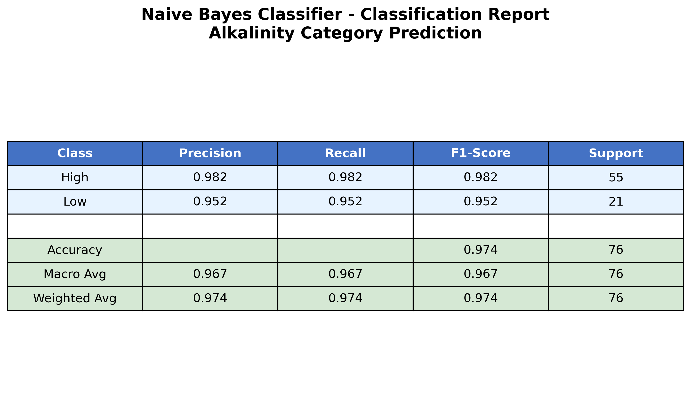
This table shows the accuracy, f1 score, precision, and recall of the Naive Bayes classifier.
These plots show the relative importance of features to the Naive Bayes classification model.
Conclusions
While the Naïve Bayes classification model worked astonishingly well with my data set, I don’t believe it would have terribly significant utility in meaningful predictive work with regard to the kinds of
questions I and others are asking of this data. Specifically, it’s not terribly useful to only know if alkalinity is “high” or “low”; specific values are needed to understand how this will affect the acidity of
the seawater. As such, classification models in general are probably not best suited to the analysis of this data for this purpose. It is gratifying to know that, if an interesting question occurs to me that DOES
primarily rely on knowing how alkalinity is classified into high or low, Naïve Bayes seems more than up to the challenge of accurately making those predictions.
Decision Trees
Overview
Decision trees are supervised machine learning models that make predictions by recursively splitting a training dataset into subsets based on feature values. The top of each tree, prior to any splitting,
contains the full dataset and is referred to as the root node. From each split we produce either internal decision nodes (at which further splitting occurs) or leaf nodes (at which a classification is assigned to
a datapoint). The tree is built by choosing a feature and split threshold that best separates the data into purer subsets; this purity is measured from the information entropy contained within each node, and what
is considered “best” is determined by information gain (which is a function of the entropy of the parent and child nodes). As an example: if we possessed a dataset with 10 data points, 6 of which were labelled
“yes” for our target variable and 4 “no”, and our first split produced two child nodes which contained 4 yes, 1 no and 2 yes, 3 no respectively, we would calculate the entropy and information gain as follows:
I_p=-0.6\cdot\log_20.6-0.4\cdot\log_2{0.}4=0.971\bigmI_{c1}=-0.8\cdot\log_2{0.}8-0.2\cdot\log_2{0.}2=0.722
I_{c2}=-0.4\cdot\log_2{0.}4-0.6\cdot\log_2{0.}6=0.971
IG=0.971-\left(0.5\cdot0.722+0.5\cdot0.971\right)=0.125
So the information gained by this split would be 0.125 bits, which may or may not be optimal compared to other possible splits.
In principle, because features are often continuous numeric data, an infinite number of potential trees exist; when you have many features to choose from for splitting and a continuous spectrum from which to
choose split points, the options are endless. In practice, we limit splitting by stopping criteria, and our data isn’t truly continuous (finite data points lend themselves to discrete splitting criteria).
Data Prep
The data was prepared in similar fashion to the preparation for Naïve Bayes: a categorical variable was constructed from the target variable Alkalinity, based on its bimodal character. I used a stratified split to
build my 80/20 training/testing split. I chose stratification because the target variable was not even in it’s split between categories; thus the relative proportion of the categories was preserved in both the
training and testing sets. The training and testing sets must be disjoint in order to ensure that, when testing the accuracy of the predictions generated by the algorithm we are not testing it on data on which it
was trained; this helps us avoid the problems associated with overfitting, though some danger of that still exists since the training and testing sets, though disjoint, were originally from the same source.
This histogram illustrates the bimodal nature of the Alkalinity feature; this was the basis for splitting it into two categories.
This table shows the head of the dataset, including the Alkalinity column reconfigured to categorical "High" and "Low".
This table shows the head of the training dataset.
Overall, all three of my constructed trees performed identically, and very well at that, with an overall accuracy of 97% on the basis of two total misclassifications, one each false negative and false positive.
Similar to the Naïve Bayes classifier, feature importance analysis indicates that the level of CO2 is the single most important predictor of high vs low alkalinity in seawater.
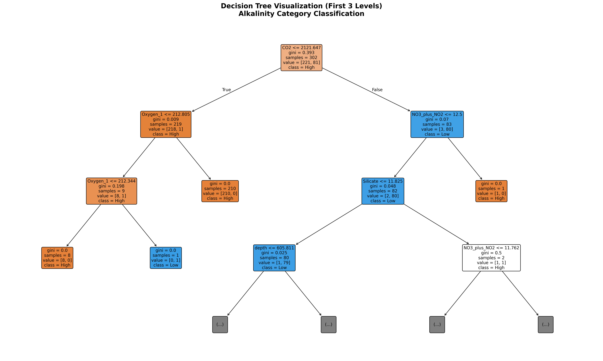
This is the first decision tree I produced (first three levels).
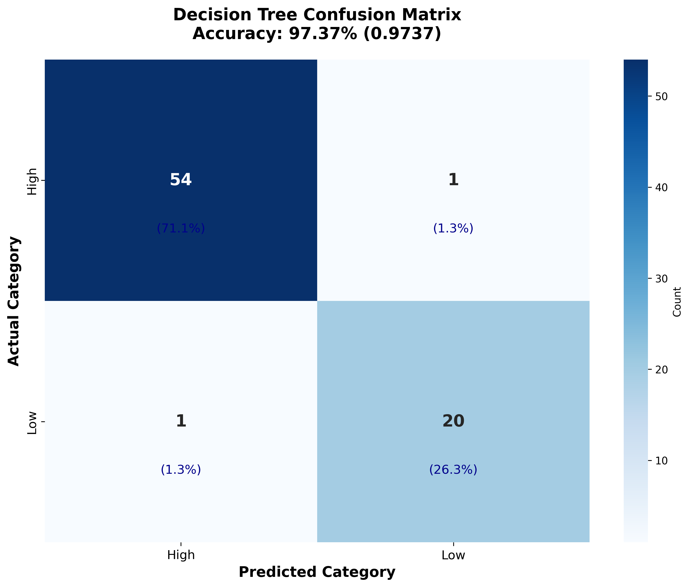
This is the confusion matrix for myy first decision tree classifier.
This is the confusion matrix for my Naive Bayes classifier.
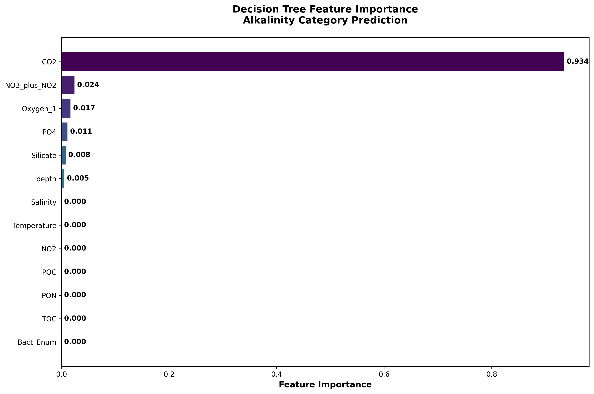
This is the relative feature importance from my first decision tree.
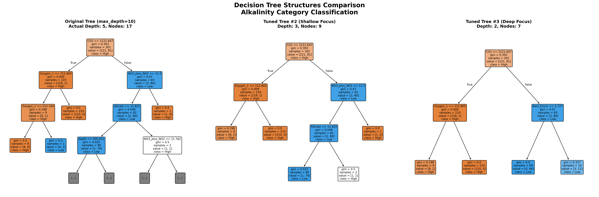
This is the first three layers of all three trees I generated.
The relative complexity of the three trees generated.
This is the confusion matrix for my second decision tree classifier.
This is the confusion matrix for my third decision tree classifier.
Conclusions
The decision trees produced highly consistent results in the prediction of high vs low alkalinity on the basis of the included feature set; this is important, because my initial data exploration found that there
seemed to be a strong temporal component to the levels of alkalinity in the data, with a sharp change occurring in roughly 2016. The date was not included in the feature set fed to the decision tree, which
indicates that indicators besides just the data can be used to accurately predict the alkalinity class. Given the identical performance of the trees, were I to continue using these models in the future I would
choose the third tree produced, on the basis of it’s simplicity and lack of depth; if a shallow tree can perform as well as a deeper tree, it should be preferred. It is interesting to note that the criteria used
to produce this tree were intended originally to produce a deeper tree, but the strong predictive power of the CO2 feature combined with the strictness of the splitting criteria combined to form a shallow tree.
Support Vector Machines (SVMs)
Analysis and results from SVM classifiers.
Regression
Regression models such as linear regression and their evaluation metrics.
Neural Networks
Design, training, and evaluation of neural network models.